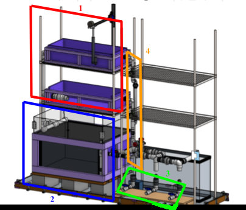
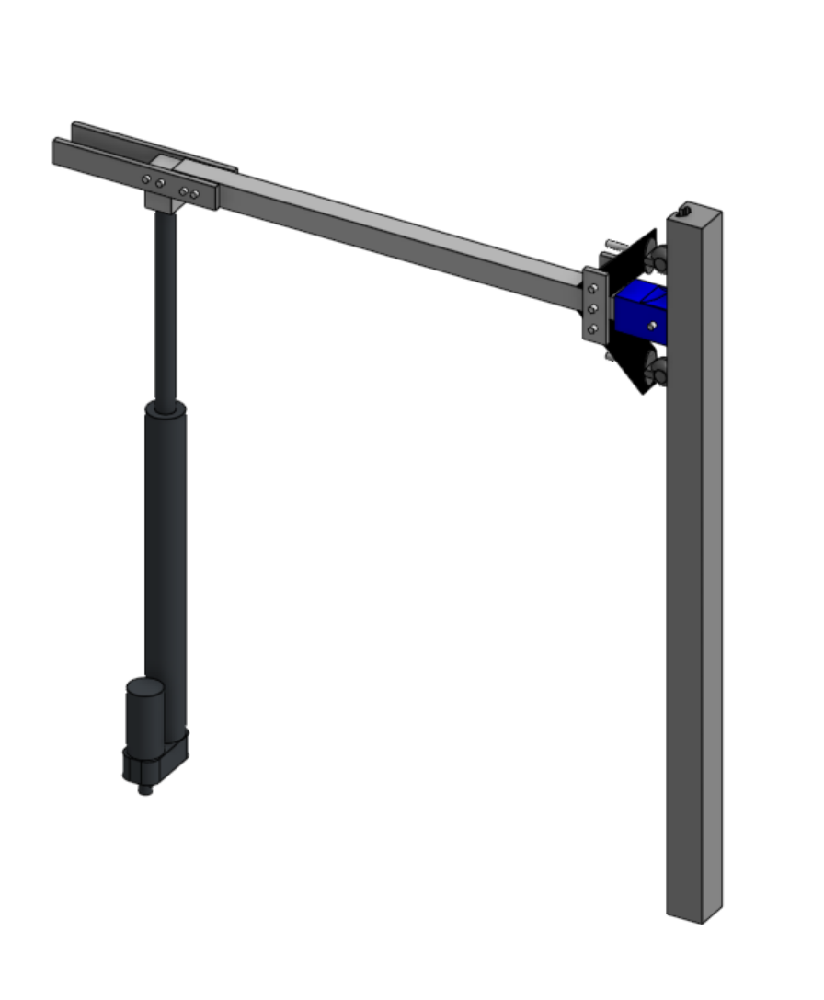
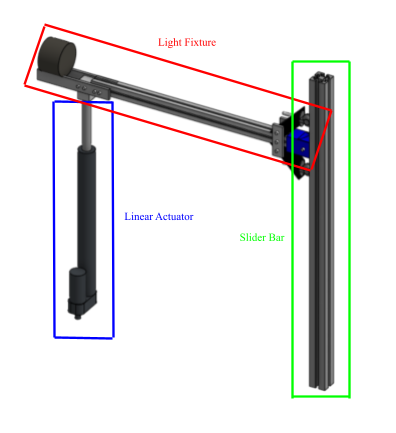
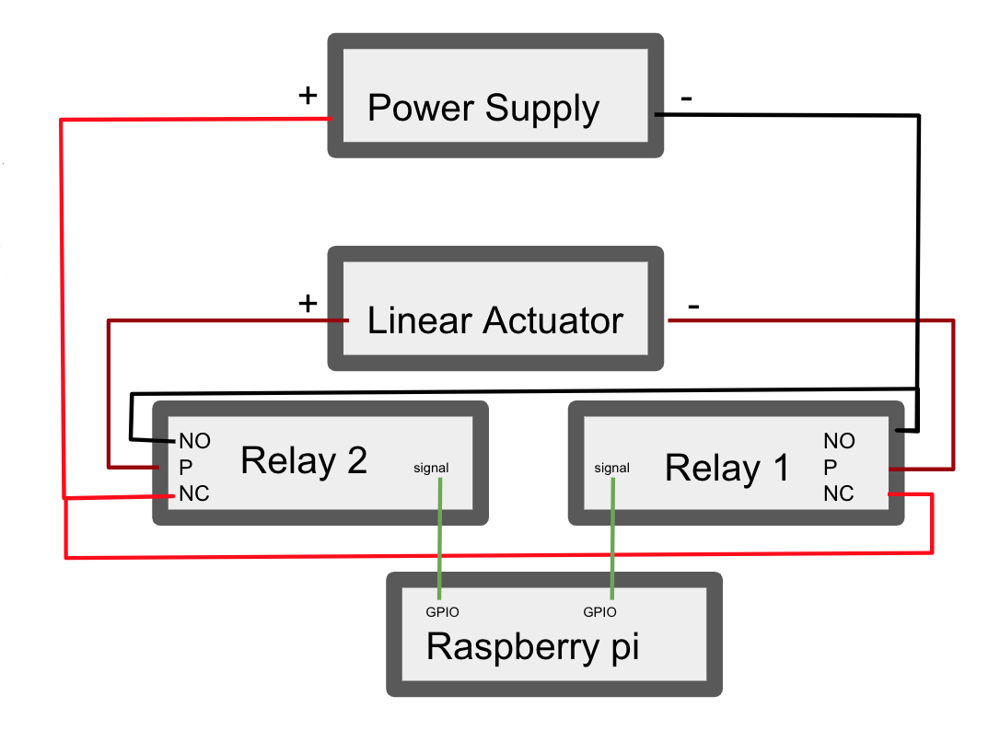
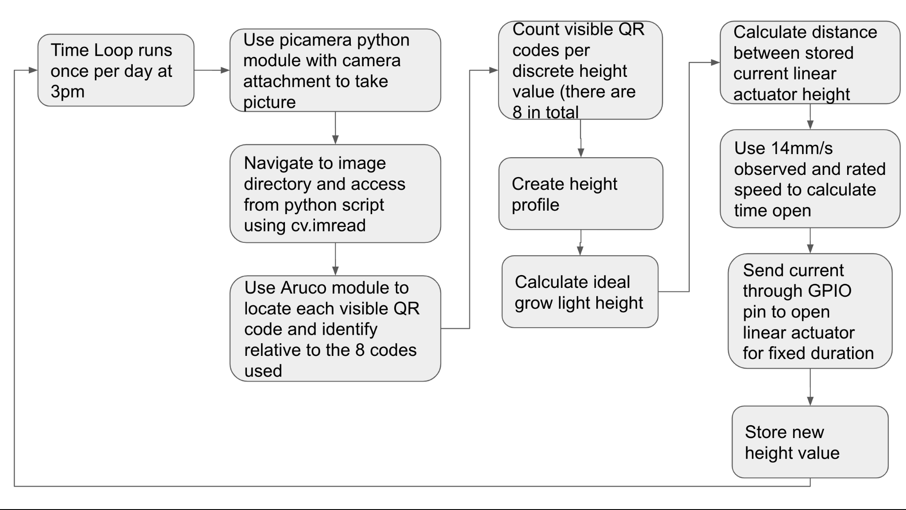
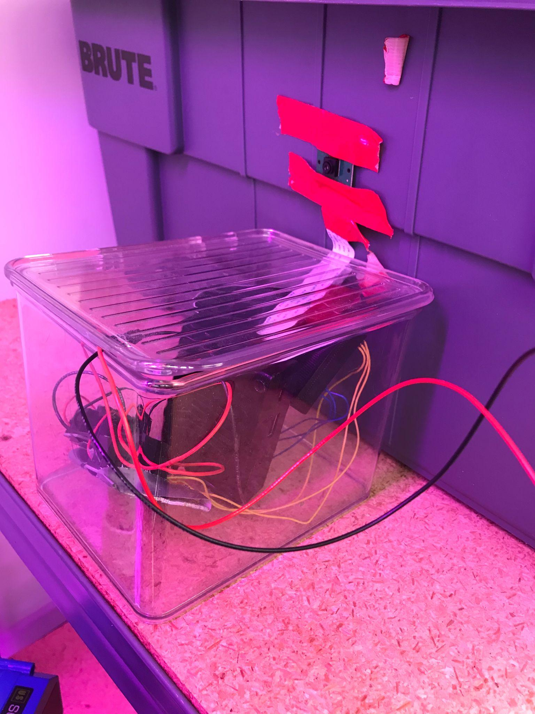
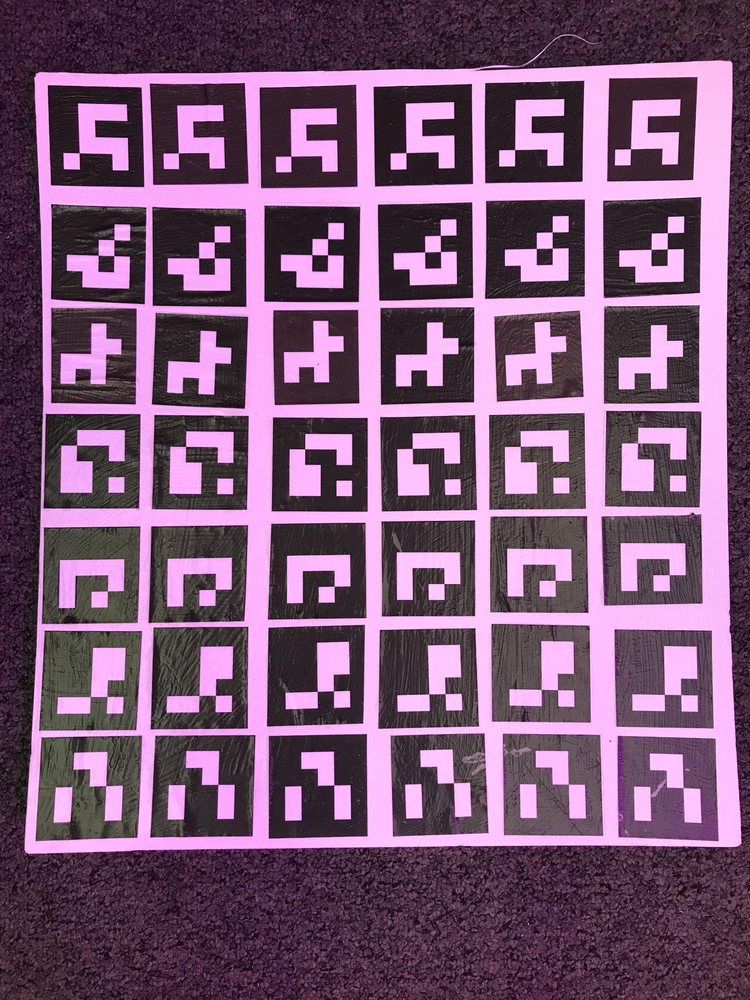

VertiGlow: Automated Grow Light Height Adjustment
An image-recognition-driven system that automatically raises and lowers grow lights to match a plant's growth stage, built for Northwestern's student-run AutoAquaponics project.
Status: Completed · Spring 2023 (DTC)
Overview
Working with Nicholas Melo, Kyan Shlipak, and Jonathan Wu for Northwestern's Design Thinking and Communication program, our team designed VertiGlow for Engineers for a Sustainable World's AutoAquaponics project - a student-built aquaponics system aiming to run fully autonomously for a month at a time. Its grow lights were fixed at a single height, which is a problem: different plants need different light intensity at different growth stages, and a static light can't adapt as the plant grows underneath it. VertiGlow closes that gap with three integrated systems - a mechanical rig that raises and lowers the light, an electronics stack that drives it, and a camera-based vision system that decides how far to move it - all built from low-cost, largely recycled materials to keep the whole thing sustainable and easy to maintain.

VertiGlow was scoped to the grow-bed section (1) of the larger AutoAquaponics system, which also includes a fish tank (2), filtration/nutrient system (3), and fluids system (4).
Challenge
The requirements pulled in several directions at once: the system had to be automatic enough to run unattended for a month, stable enough to never risk collapsing onto the living fish and plants beneath it, and simple and modular enough that any team member could repair or upgrade a single piece without touching the rest. Mechanically, that stability requirement turned out to be harder than it looked - an early cantilevered design, using just the linear actuator and a counterweight, created enough moment on the actuator to jam and threaten mechanical failure under the full load of the bar and lights.

The mechanical system that resulted: a linear actuator on one side, a slider bar on the other, working together to eliminate the moment a single actuator couldn't handle alone.
Approach
Mechanical. The final design paired the linear actuator with a parallel slider bar, so the light fixture bar is supported at both ends instead of cantilevered off the actuator alone. A 3D-printed slider rides in the T-slot of the aluminum slider bar, and a dual-roller truss system - added after stress testing showed the slider alone would fail under full load - eliminates the shear force that was jamming the mechanism. Aluminum T-slotted framing rail was chosen over the original wood concept for its rigidity, corrosion resistance, and lighter weight in the aquaponics system's humid environment.

The three core mechanical components: a linear actuator providing vertical force, a light fixture bar carrying the lights, and a slider bar eliminating the moment that a cantilevered design couldn't handle.
Electronics. A 12V/3A power supply feeds the linear actuator through two non-latching relays, which let a Raspberry Pi 3B+ switch and reverse the actuator's polarity - extending, retracting, or holding it in place - using only low-voltage 3.3V GPIO signals it can safely output directly. The Pi was chosen for its combination of GPIO control, built-in camera support, and just enough compute for lightweight image processing, all in a small, well-documented, low-cost package.

Two relays let a single Raspberry Pi safely reverse the linear actuator's polarity using only its low-current GPIO pins.
Software. Rather than trying to recognize plants directly, the system reads a grid of fiducial (ArUco) codes mounted behind the plant - a much easier computer-vision problem, since the codes are high-contrast, uniquely identifiable, and light on compute. Once a day, the Pi photographs the grow bed, uses OpenCV and the Aruco library to determine which codes are occluded by foliage at each height, builds a height profile of the plant, and calculates how far to move the light accordingly. A second script runs weekly to re-zero the stored actuator position, since small timing discrepancies between commanded and actual actuator movement compound gradually over many daily adjustments.

The daily control loop: photograph the grow bed, decode which fiducial markers are visible at each height, build a plant height profile, and drive the actuator to the calculated target height.
Result
The assembled system was installed on the right side of the AutoAquaponics team's upper grow bed, deliberately leaving the left side on its original fixed-height lights as a built-in control group for comparing plant growth. Performance testing confirmed the linear actuator's rated 1000 N output force was more than sufficient for the mechanical load, and the full mechanical, electrical, and software stack ran successfully as an integrated system, with the electronics housed in a sealed, insulated enclosure to protect them from the aquaponics system's humidity.

The finished electronics enclosure - power supply, relays, and Raspberry Pi with camera - mounted in place under the grow lights.
The fiducial-code approach itself proved out well in practice: even in a cluttered real-world frame with visible foliage overlapping several markers, the Aruco decoder still reliably located and identified every code in view, exactly the signal the height-profile algorithm needs to work.

The physical fiducial code board - a 6×7 grid of unique markers - mounted behind the plants as the reference the vision system reads against.
The current build and algorithm are tuned specifically for lettuce and similar leafy greens, and only cover the right half of the upper grow bed by design. The clearest next steps are extending coverage to the rest of the system, adding manual override and emergency-stop controls to the AutoAquaponics team's dashboard, and running the system across a full growth cycle rather than the shorter test windows used here - along with exploring whether the design's novelty (see the report's patent research appendix) might be worth pursuing further.
Full Report
The complete report includes the full user and requirements research, sustainability and background research appendices, detailed construction and use instructions, performance testing results, the complete Python source for both the daily adjustment and weekly re-zeroing scripts, a bill of materials, and patent research.